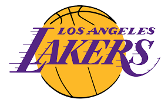
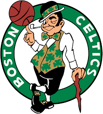

Lab 12 - Conditionals
 Challenges
The challenge of this lab was to use conditionals in JavaScript to create a program that took the user's input and sorted it by the amount of letters in the name by % 4. Depending on the remainder, you coukd be drafted by the Lakers, Warriors, Heat or Celtics.
Problems
I decided to try this lab using jQuery opposed to normal JavaScript. It was difficult setting up the functions at first because I couldn't use the professors screenshots as guides but through trial and error I figured it out.
Results
The results of the lab are below. Just enter your name and a team will draft you!